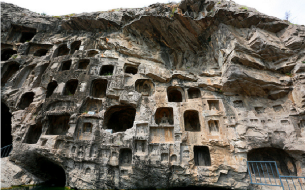
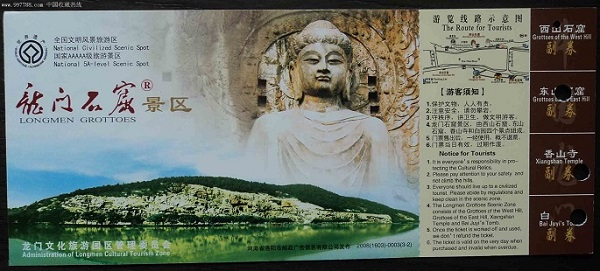
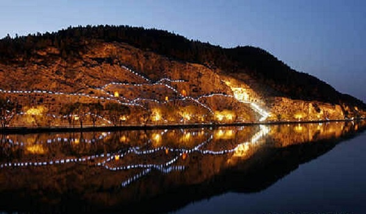
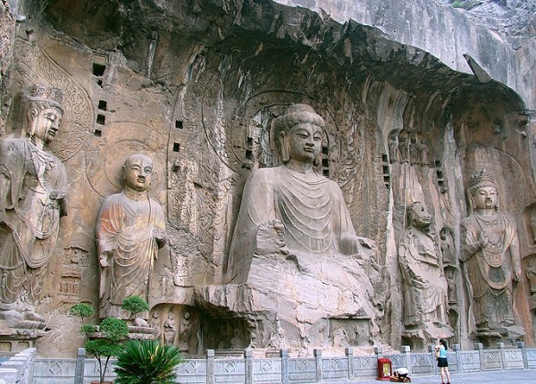
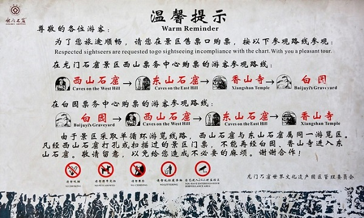

龙门石窟旅游攻略
龙门石窟是中华文化的魁宝，被选为世界文化遗产，也是中国5A级景区之一，位于河南省洛阳市南郊伊河两岸的龙门山与香山上，石窟开凿于北魏，先后历经数个朝代，南北长达1公里， 至今存有窟龛2345个，造像10万余尊，碑刻题记2800余品，是中国石刻艺术宝库之一。
1、最佳旅游时间：洛阳四季分明，最好的旅游季节是秋天，那时秋高气爽，适宜登山游玩。不过去旅游做多的时间是每年4月1日至5月10日的洛阳牡丹花会期间，这时洛阳城内牡丹盛放，吸引无数中外游客， 但这时人数较多，喜欢清静的朋友可选择淡季前往，冬季应该是人最少的旅游季节。
2、门票信息：龙门石窟景点实行一票制，包含龙门石窟、白园、香山寺三个景点，全价120元，学生票半价60元。
3、开放时间：春、夏、秋：7：00―18：30 ，冬季：7：30―17：30 ，每年4月1日―10月10日可夜游龙门，开放时间：18：30―22：00。
4、景点交通：郑州有到龙门的高铁，40分钟即到龙门，下高铁后可打车火乘公交车20分钟即到龙门景区。洛阳城中可乘81、53、60路公交车前往。另外少林寺有直接到龙门石窟的班车。
5、旅游路线：西山石窟―东山石窟―香山寺―白园 西山石窟的路线：北门―禹王池―潜溪寺―宾阳三洞―摩崖三佛龛―万佛洞―莲花洞―奉先寺―古阳洞―药方洞--南门 东山石窟：南门―擂鼓台三洞―文物廊―千手千眼观音像龛―西方净土变龛―看经寺―二莲花洞―四雁洞―北门 香山寺： 南步游道―莲花池―钟楼―鼓楼―天王殿―罗汉殿―石楼―九老堂―观景台―大雄宝殿―乾隆御碑亭―蒋宋别墅―撞钟―从后门经东山宾馆进入白园 白园： 南大门进―南诗廊―琵琶峰―北诗廊―道诗书屋―乐天堂―青谷―正门
